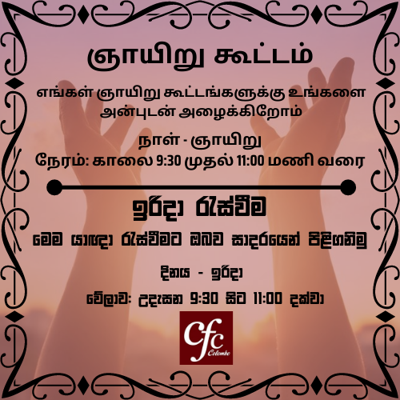
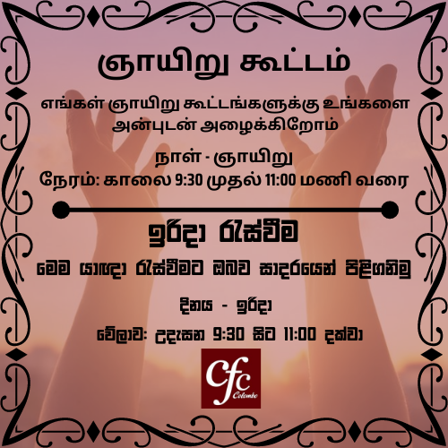

 The church of believers that meets at Christian Fellowship Centre (CFC) today commenced with a few families that first met together in Bangalore, India in August 1975. Later, CFC spreaded to many countries around the world and we meet here in Sri Lanka. Especially in Colombo
1. That the Bible (66 books) is the inspired and infallible Word of God, the sole and sufficient guide for our life on earth.
2. That there is one God eternally existent in three Persons: Father, Son and Holy Spirit.
3. In the Deity of our Lord Jesus Christ, His virgin birth, His humanity, His perfectly sinless life, His substitutionary death as an atonement for our sins, His bodily resurrection, His ascension to the Father, and His personal return to the earth for His saints.
That all human beings are dead in sin and utterly lost and that the only way their sins can be forgiven is through repentance and through faith in the death and resurrection of our Lord Jesus Christ.
4. In the regenerating work of the Holy Spirit, whereby a person is born again to be a child of God.
That justification is by faith in Christ alone, the evidence of this being good works that glorify God.
5. In baptism in water, by immersion, after regeneration, in the Name of the Father, the Son and the Holy Spirit.
6. In the necessity of being filled with the Holy Spirit continually in order to have power to be witnesses for Christ - by life and by word.
7. In the resurrection of the righteous to eternal life and the resurrection of the unrighteous to eternal damnation.